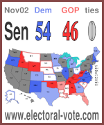
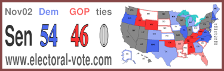
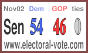

Here are four icons you can put on any blog or web page. When a page containing one of them is loaded, the browser goes to this site to fetch the icon containing the current predictions. Clicking on the icon takes you to this site. The icons are .png image files, which all modern browsers understand.
To include any of the icons on your Website or blog, just cut and paste the text to the right of the icon below onto your site. It just takes 5 minutes of your time once and from then on until the election, all visitors to your site will automatically get the current scores.
|
150 x 180  |
<a href="https://www.electoral-vote.com"><img border="0" src="https://www.electoral-vote.com/evp2026/Icons/evmap.png" alt="Click for www.electoral-vote.com" width="150" height="180" /></a> |
|
250 x 80 |
<a href="https://www.electoral-vote.com"><img border="0" src="https://www.electoral-vote.com/evp2026/Icons/evwide.png" alt="Click for www.electoral-vote.com" width="250" height="80" /></a> |
|
375 x 120  |
<a href="https://www.electoral-vote.com"><img border="0" src="https://www.electoral-vote.com/evp2026/Icons/evwider.png" alt="Click for www.electoral-vote.com" width="375" height="120" /></a> |
|
150 x 90  |
<a href="https://www.electoral-vote.com"><img border="0" src="https://www.electoral-vote.com/evp2026/Icons/ev.png" alt="Click for www.electoral-vote.com" width="150" height="90" /></a> |